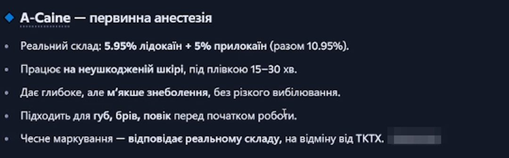
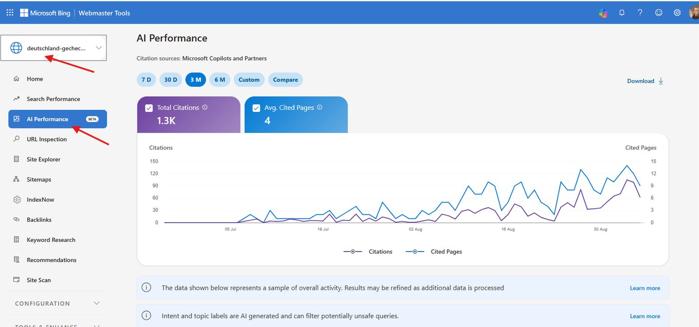

Не дочитывайте. Наберите номер, держите трубку у уха — дочитаете, пока идут гудки.
Ответит Вера. Кто она — скажет сама: «Добрый день, Business Intelligence DNA, меня зовут Вера, я виртуальный ассистент, разговор сохраняется в виде текста. Вы по диагностике или по внедрению?» Дальше отвечайте ей как человеку и спрашивайте о чём хотите.
Вера — наш цифровой сотрудник: по-русски, голосом, на входящих звонках, круглосуточно. Обещание в интернете нарисовать легко. Того, кто берёт трубку в три часа ночи, — не нарисуешь.
Ниже пять инструментов. Четыре уже работают, три из них открываются прямо отсюда. Пятый ставят потом — про него честно в конце.
Придумали, что продавать. Сделали, где продавать. Привели людей. Поставили продавца. Отдали рутину машине.
Она нашла то, чего не увидел CPA. И молчала об этом
Юля открыла книги клиента. Книги вёл дипломированный бухгалтер. Баланс сходился.
Она нашла для клиента огромную сумму расхождений, которую не увидел его CPA.
В продажах она это не использовала ни разу. Не считала, что кому-то интересно.
Юля — финансист из Тампы. Пятнадцать лет в цифрах. Умеет находить то, что в них спрятали.
На сайте у неё было написано «Fractional CFO». Так себя называют тысячи людей.
Свой сайт она сама называла непонятным. Брала примерно вдвое меньше, чем хотела. Клиенты приходили только по сарафану.
Мы забрали у неё 140 минут разговора. Дальше три рабочих дня работали сами.
Вот что легло на стол.
Теперь её отличие помещается в одну строку: финансовое руководство для компаний, которые переросли свою финансовую инфраструктуру.
А эта находка теперь стоит в продажах первой. Нашла её она сама, у своего клиента — это не наш результат. Наша работа была в другом: поставить это в продажи первым.
«Честно говоря, сначала я думала, что это будет очередной красивый документ, который в итоге просто останется лежать в столе.»
Julia Dospehoff · Remote CFO & Accounting Solutions · Тампа, Флорида
Начинаем с глубокой диагностики — $500. Обычное маркетинговое исследование стоит около $5000 и идёт месяцами. У нас — не месяцы.
Весь пакет, как у Юли, — это уже внедрение, от $5000. Диагностика в него засчитывается.
У вас в шкафу лежит своя такая находка. Вы просто не считаете это товаром.
Три секунды с телефона
Человек открыл ваш сайт. Три секунды. Закрыл.
Он ничего не понял и не обязан был.
Тут я ничего не буду рассказывать. Просто смотрите в окно.
Внизу слева кнопка «Подзвонити». Нажмите её.
Внутри бот тренировок с разбором видео и питание по фото. $500 в месяц.
Такие сайты продают за $5000. Мы сайт отдельно не продаём: сперва пишем, что на нём будет сказано, и только потом собираем. Исключение — если тексты у вас уже готовы.
Кнопку «Подзвонити» вы уже заметили. Голосом отвечать умеем и мы — про это через два экрана.
Ассистент назвал три имени. Вашего среди них нет
Клиент больше не гуглит. Он спрашивает: кого посоветуешь. Читает ответ, в котором вас нет. Перепроверять не пойдёт — поверит списку.
Место внутри ответа не продаётся за деньги. OpenAI включил в ChatGPT рекламу — это блок рядом с ответом: «Реклама не влияет на ответы ChatGPT».
Реклама кончается вместе с бюджетом. Цитата остаётся.
Магазин для бьюти-мастеров, семь рынков. Одиннадцать контрольных запросов в Perplexity записали 8 июня и не трогали.
- 8 июня — 0 из 11
- 7 июля — 3 из 11
- 29 июля — 7 из 11
- 11 августа — 10 из 11
- 2 сентября — 9 из 11
Copilot советует его товар вместо конкурента, клик — человек на сайте.

Наш справочник по переезду в Германию: 1300 цитат в ответах ИИ за три месяца, из поиска — 22 клика.

Честно: ChatGPT упирается сильнее остальных. 5 сентября — 2 ответа из 7, Perplexity — 8 из 9. Пока не закрыли.
Это один проект. Рынок и язык у вас свои.
$1500 за три месяца, оплата вперёд.
До старта письменно согласуем ваши запросы и замерим, где вы сейчас. Через три месяца прогоняем тот же список и показываем, что изменилось.
Спросите ассистента про свою нишу. Кого назовёт вместо вас?
Человек вас нашёл. Написал в пятницу в 23:40. Кто ему ответит?
Написал в 23:40 в пятницу
Вы увидите это в понедельник.
Он не дождётся. Он уже пишет следующему.
Не читайте про неё. Позвоните: +1 424 781 1913.
Её зовут Вера. Она не робот на кнопках «нажмите один»: говорит по-русски, слышит живую речь и отвечает почти без паузы. Первой фразой честно предупреждает, что она программа и что разговор сохраняется в виде текста.
Спрашивает, что человеку нужно. Записывает. Может прислать письмо прямо во время разговора, пока человек держит трубку. Если человек готов платить — переводит на живого.
После каждого звонка вам приходит письмо: кто звонил и с какого номера, зачем, о чём договорились и на какой вопрос она не ответила.
Вам ставим такого же Дежурного — на ваш действующий номер, через переадресацию. Номер остаётся вашим, менять его не нужно.
Запуск — $1000. Дальше $199 в месяц: 1000 минут разговоров и час наших правок. Сверх — $0.25 за минуту.
Чтобы он ещё и продавал — плюс $1500 к запуску. Тогда в месяц $399: 1500 минут и два часа правок.
Попробуйте её перебить. Посмотрите, что будет.
Четвёртый час в таблице
Конец месяца. Кто-то у вас сводит цифры руками.
Четвёртый час. Через месяц будет то же самое.
Это оплаченные часы. И так каждый раз.
Заявки, счета, отчёты, панель с цифрами. Связываем между собой. Руками больше никто не переписывает.
Кейса, который можно показать, у нас тут пока нет. Придумывать не будем.
Сначала смотрим, как устроена ваша неделя. Потом называем цену. Работаем помесячно.
Не факт, что возьмёмся за всё.
Об этом обычно заговаривают на третьем месяце. Когда продажи уже идут, а руки заняты.
Кто это делает
Андрей. Предприниматель и основатель бизнесов. Строил холдинг из ~30 предприятий: налоговая оптимизация корпораций, стратегия, разбор любого бизнеса. В прошлом — CFO в корпорации.
Маша. Экс-CFO крупной корпорации. Психология клиента, переговоры и нетворкинг. Системность и доведение до конца.
Муж и жена, выкованные в финансах. Поэтому вы разговариваете с двумя конкретными людьми, а не с командой, которую никогда не увидите.
Business Intelligence DNA. Работаем под NDA.
Раньше мы делали исследование рынка, разбор конкурентов и стратегию. Отдавали документы.
Раньше я думал, что человеку нужен документ с ответом. Сегодня думаю иначе. Нужен продавец, который работает в понедельник утром.
Поэтому теперь ставим то, что из документов следует: сайт, видимость, продавцов.
Что предлагаю
Первым 10 — глубокая диагностика бесплатно (обычно $500).
Разбираю ваше дело и пишу: что ставить первым, что вторым, что не трогать вообще и сколько это стоит. Письменно, под вас. Не лекция про нейросети.
Процентов и сроков не обещаю. Продажи вырастут, затраты упадут, вас станет видно — при внедрении наших решений и выполнении рекомендаций.
выбрать время
текст уже готов, нажать «отправить»
На этой неделе кто-то из ваших клиентов искал не в Google. Он спросил ассистента. И получил ответ.
Вы не знаете, что там было сказано. Я тоже не знаю.
И дома до сих пор спорим об одном: какой из пяти кусков сработал бы, если убрать остальные четыре.
Если бы у вас был ровно один заход — что поставили бы первым?
Инструменты по видимости, продавцам и автоматизации внедряем вместе с партнёром.